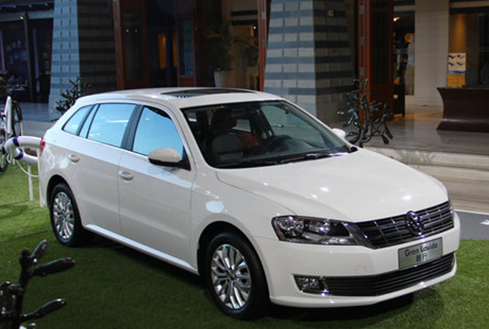

我们在平时开车的时候总能遇到一些所谓的老司机，总以为自己开车十几年了啥都懂对交通法规了如指掌。其实在日常驾驶过程中经常违反交通法规，自己还不知道还以为是正确的。关键的是还带坏了新手司机，大咖觉得这一类人真应该重新学学。有一些扣12分的违法行为还真不是每个人都知道，大咖就来科普科普。
这样超速扣12分没商量
提醒驾驶小型客车或摩托车，行驶超过道路规定时速的50%以上被记12分。驾驶中型以上载客载货汽车、校车、危险物品运输车辆，限速为100km/h的高速公路上超过限速20%的要记12分。
在国道省道上超过限速50%以上的也要记12分，超速可能是最常见的交通违法行为可能驾驶员一不留神就超速了，大咖觉得还是要时刻提醒自己毕竟扣分是小安全才是最重要的。
故意遮挡号牌
在路上经常会见到在一些禁止停车的路段，许多私家车停在那儿。一些人抱有侥幸心理为逃避处罚故意把车辆的号牌遮住，没曾想到这种行为本身就是要被记12分。
高速上倒车、逆行、掉头在高速公路上开车一定要遵守交通规则，不然造成的事故肯定小不了。日常开车上高速时错过了出口，大咖提醒各位一定不要倒车或者掉头回去这是非常危险的，车子哪怕在少也不行。在高速上由于车速本身就快，即使后面的车辆发现前方有人倒车、掉头也很难做出反应。所以在高速行车时倒车、逆行、掉头肯定是记12分的。
酒驾、醉驾酒后驾驶机动车罚款1000元-2000元，记12分并暂扣驾照6个月。酒后驾驶营运车辆罚款5000元，记12分并处以15日以下拘留，5年内不得重新获得驾照。
醉酒驾驶机动车辆的吊销驾照，5年内不得重新获得驾照，经过判决后处以拘役。醉酒驾驶营运车辆的吊销驾照，10年内不得重新获得驾照，终生不得驾驶营运车辆，经过判决后处以拘役并处罚金。提醒大家开车不喝酒酒后不开车还是要记住。